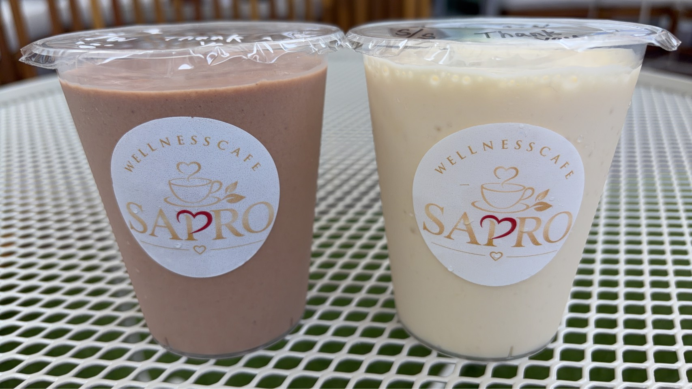
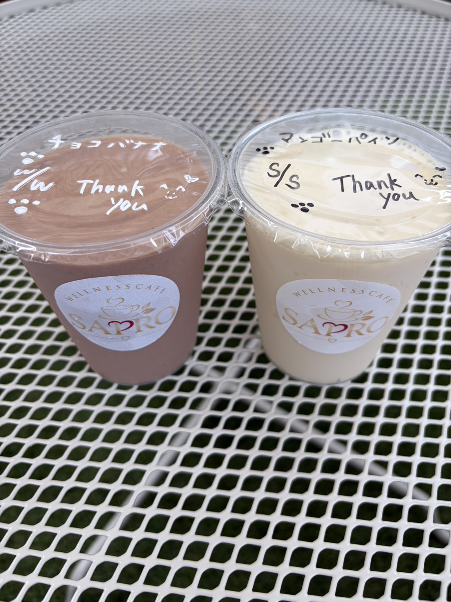
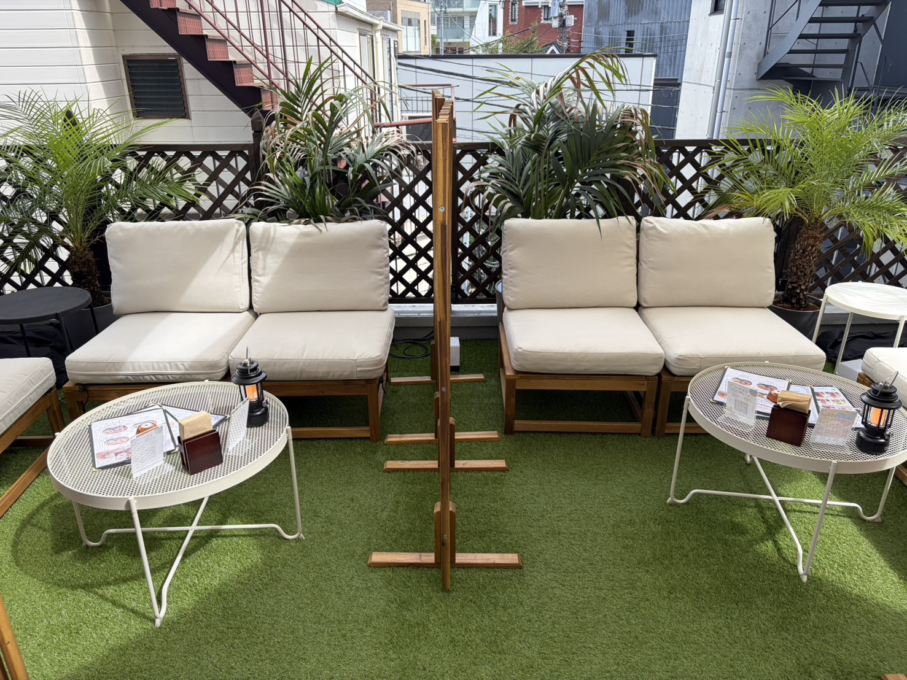

砂糖不使用
果物など素材が持つ甘みを活かして。満足感のある味わいに仕上げます。

SAPRO SMOOTHIES
HARAJUKU1F TAKE OUT / 3F CAFE & TERRACE
原宿・神宮前でお待ちしています01 / CUSTOM MADE
好きな味を起点に、ベースやプロテインを選ぶ。
組み合わせを楽しむのが、SAPROのスムージーです。
フルーツ、グリーン、カカオ、和の味わい。好みの素材から選んでも、スタッフのおすすめから選んでも。
ミルクは牛乳または豆乳。プロテインはホエイまたはソイから、お好みに合わせて選べます。
ビタミン、食物繊維、ステビアなど。気分や目的に合わせて、店頭でスタッフにご相談ください。
カスタム内容により追加料金がかかる場合があります。
お店でカスタムを楽しむ03 / WHY SAPRO
プロテインやサプリメントを展開するSAPROがつくる、ウェルネススムージー。味わい、飲みやすさ、続けやすさまで大切にしています。
果物など素材が持つ甘みを活かして。満足感のある味わいに仕上げます。
すべてのスムージーにコラーゲンを配合。日々の習慣に取り入れやすい一杯です。
味わいもベースも、好みに合わせて。スタッフと相談しながら選べます。
04 / FOOD & SIDES
05 / VISIT SAPRO
1Fで注文して、街へ。
3Fの店内やテラスで、ゆっくり。
テラス席は愛犬と一緒に利用できます。

いつもの街に、
いつもの一杯を。
原宿神宮前店
TAKE SAPRO WITH YOU
デリバリーの注文はこちらから。販売状況や配達エリアは注文画面でご確認ください。